Раскрой — руководство пользователя
Расчёт раскроя панелей, профилей, клея и LED-подсветки по размерам стены. Версия программы от 5 октября 2026 (коммит b3d63e8). Все скриншоты сделаны на демонстрационном проекте: стена 4200×2600 мм с дверью и окном, бамбуковая панель 8190, вторая стена и угол между ними.
О программе
Раскрой — это один файл raskroy.html. Он открывается двойным щелчком в обычном браузере (Chrome, Edge, Firefox, Safari) и работает без интернета и без установки. Ничего никуда не отправляется: все данные остаются на вашем компьютере.
Вы вводите размеры стен, проёмов и выбираете материал — программа сама раскладывает панели, считает стыки и профили, раскраивает листы с учётом обрезков, считает клей, LED-подсветку и стоимость, рисует схему раскладки и карту раскроя для резчика. Слева — все настройки, справа — результат, он пересчитывается сразу при любом изменении.
.json), а при следующем визите — Открыть проект. Подробнее — в главе 12.1. Быстрый старт — первый расчёт за 5 минут
- Назовите объектРаздел 01 Объект → «Клиент / объект». Название попадёт в смету и в имя файла проекта.
- Задайте размеры стеныТам же: «Ширина области», «Высота области», «Высота потолка», все в миллиметрах.
- Выберите материал и расцветкуРаздел 02 Панель → «Материал», затем «Расцветка (артикул)» — откроется окно с фотографиями образцов.
- Добавьте проёмыРаздел 03 Проёмы и откосы → + Добавить проём. Укажите тип (окно, дверь, ниша), отступ от стены, ширину и отметки низа/верха от пола.
- Проверьте схемуСправа «Схема раскладки». Проёмы можно двигать мышью, по линиям стыков и краёв — кликать (меню профиля).
- Прочитайте подсказкиНад карточками итогов программа пишет, что не так (проём вылез за стену, слишком узкая крайняя полоса и т. п.) и как сэкономить панель.
- Посмотрите раскрой и сметуНиже: «Карта раскроя» для резчика, «Спецификация» и «Смета». Цены — в разделе 06 Цены.
- Сохраните и/или распечатайтеКнопки в шапке: Сохранить проект, Печать / PDF.
2. Окно программы
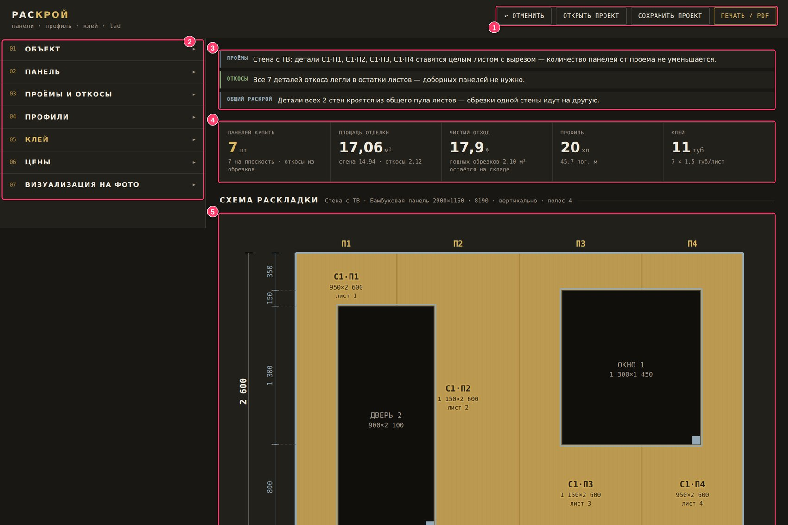
- Верхняя панель — отмена действия, открытие и сохранение проекта, печать / PDF (глава 3).
- Левая колонка с настройками — семь разделов 01–07. Клик по заголовку раскрывает или сворачивает раздел. При прокрутке страницы колонка остаётся на месте.
- Подсказки и предупреждения — цветные строки: синие — информация, жёлтые — стоит проверить, красные — ошибка.
- Карточки итогов — сколько панелей купить, площадь отделки, процент чистого отхода, профиль, клей (и LED, если нарисован).
- Схема раскладки — главный рабочий экран: тут же можно кликать и перетаскивать.
Ниже схемы, по порядку, идут: LED (рисование), 3D-макет комнаты, визуализация на фото, карта раскроя, вырезы под проёмы, спецификация и смета. На узких экранах (телефон, планшет) колонка настроек уходит над результатами.
| Что вам нужно | Где найти |
|---|---|
| Размеры стены, углы, несколько стен | слева, раздел 01 «Объект» |
| Материал, расцветка, цвет профилей, раскладка | слева, раздел 02 «Панель» |
| Двери, окна, ниши, откосы | слева, раздел 03 «Проёмы и откосы»; быстрые правки — на схеме |
| Профили по краям и стыкам | раздел 04 «Профили»; быстрые правки — клик по линии на схеме |
| Клей | раздел 05 «Клей» |
| Цены и наценка | раздел 06 «Цены» (по умолчанию свёрнут) |
| Картинка для клиента на фото его комнаты | раздел 07 «Визуализация на фото» и блок справа «Визуализация на фото» |
| Подсветка | справа, блок «LED — рисование отрезков» |
| Как резать листы | справа, «Карта раскроя» |
3. Верхняя панель
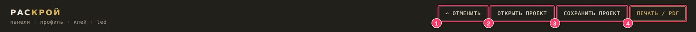
- ↶ Отменить — отменяет последнее действие (до 20 шагов). Недоступна, пока нечего отменять. Горячая клавиша — Ctrl+Z (⌘+Z на Mac), работает и в русской раскладке. Набор числа «2700» считается одним шагом, а не четырьмя.
- Открыть проект — загружает ранее сохранённый файл
.json. - Сохранить проект — скачивает файл вида «Иванов гостиная 2026-10-05.json» со всеми стенами, проёмами, LED, разметкой фото.
- Печать / PDF — открывает печать браузера. Чтобы получить PDF, выберите принтер «Сохранить как PDF».
4. Раздел 01 «Объект»
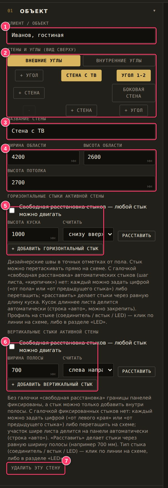
- Клиент / объект — произвольное название. Идёт в смету и в имя сохраняемого файла.
- Стены и углы (вид сверху) — «компас»: здесь создаются стены и углы между ними (см. ниже).
- Название стены — имя активной (подсвеченной) стены. Если не менять, будет «Стена 1», «Стена 2» и т. д.
- Ширина области, высота области, высота потолка, мм. Область — та часть стены, которую вы отделываете. Если область выше потолка, программа предупредит.
- Горизонтальные стыки активной стены — свободная расстановка, «расставить», «+ добавить горизонтальный стык» (глава 8).
- Вертикальные стыки активной стены — то же для вертикальных (глава 8).
- Удалить эту стену — удаляет активную стену. Последнюю оставшуюся удалить нельзя.
Стены и углы: «компас»
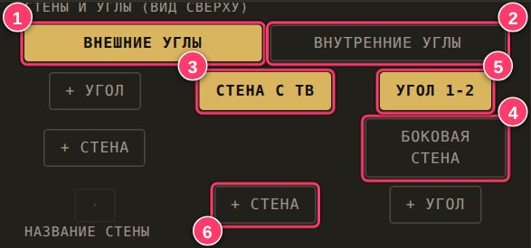
- Внешние углы — тип для всех углов проекта: внешние (выступающие в комнату) углы.
- Внутренние углы — внутренние (обычные углы комнаты). Переключатель действует сразу на все связи; от типа зависят используемые угловые профили и смета.
- Активная стена — подсвечена жёлтым; то, что вы вводите в разделах слева, относится к ней. Клик по другой стене переключает на неё.
- Другая стена — стены лежат в четырёх «слотах»: север, юг, запад, восток. Кнопка с названием стены переключает на неё.
- «Угол 1-2» — угол между стенами 1 и 2. Клик открывает меню угла (ниже).
- + стена — создаёт стену в этом слоте и сразу делает её активной. Кнопка + угол в диагональных клетках создаёт прямой угол 90° между двумя соседними стенами.
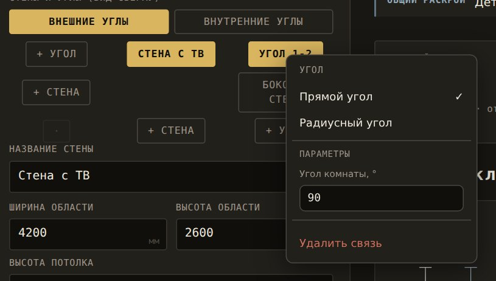
В меню угла:
- Прямой угол — стены встык под заданным углом; в смету идут угловые профили.
- Радиусный угол — стена плавно загибается панелью (см. ниже).
- Угол комнаты, ° — по умолчанию 90.
- Удалить связь — стены остаются, а угол между ними исчезает.
Если стена одна, а угол рядом нужен только радиусный, то в клетке рядом с ней можно создать «радиус без стены».
Размеры области
Все размеры задаются в миллиметрах. Проёмы привязываются к левому краю области (или к правому, или по центру). Если высота области больше длины листа, на стене появятся горизонтальные стыки — автоматически через длину листа. Если лист в точности равен высоте стены, обрезков не будет, и программа предупредит, что это, возможно, опечатка.
Радиусные углы
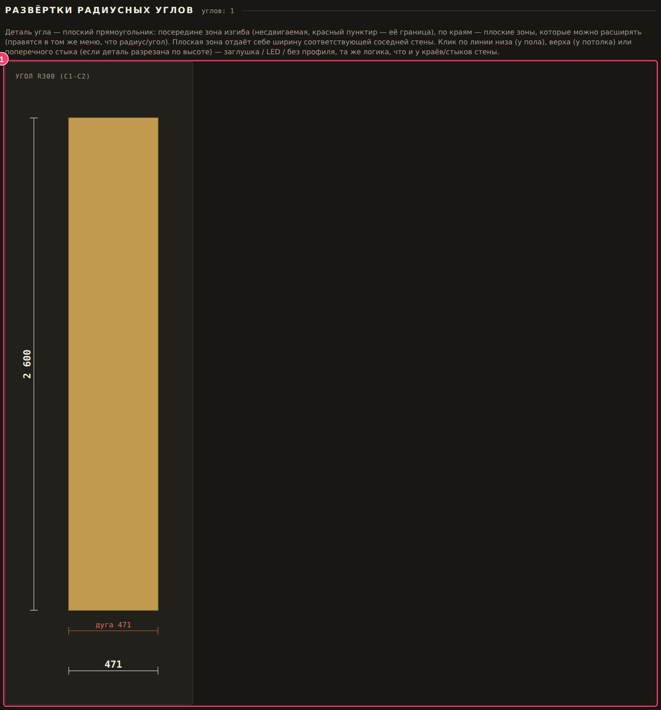
В меню радиусного угла появляются поля «Радиус, мм» и «Плоские зоны» по краям детали (у стены A и стены B). Деталь угла — плоский прямоугольник: посередине несдвигаемая зона изгиба (красный пунктир — её граница), по краям — плоские зоны, которые можно расширять. Плоская зона отдаёт себе ширину соседней стены. Клик по линии низа, верха или поперечного стыка на развёртке открывает меню профиля — так же, как и на схеме стены.
5. Раздел 02 «Панель»
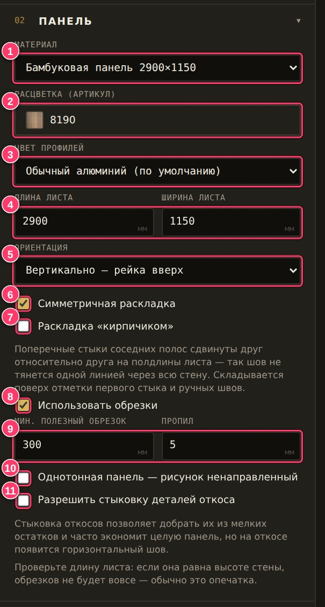
- Материал — тип панели. Шесть вариантов (таблица ниже). При смене типа размеры листа подставляются автоматически.
- Расцветка (артикул) — кнопка открывает выбор расцветки с фотографиями (см. ниже). Для «скал» и «Своего размера» строка скрыта.
- Цвет профилей — один на весь проект (см. ниже).
- Длина листа / ширина листа, мм. Подставляются по типу панели; для «Своего размера» вводятся вручную.
- Ориентация — «Вертикально — рейка вверх» (панели стоят) или «Горизонтально».
- Симметричная раскладка — крайние полосы делаются равной ширины, а не «одна целая, одна остаток». Включена по умолчанию.
- Раскладка «кирпичиком» — поперечные стыки соседних полос сдвигаются на полдлины листа, и шов не тянется одной линией через всю стену.
- Использовать обрезки — остатки листов идут на другие детали (проёмы, откосы, другие стены).
- Мин. полезный обрезок — обрезок меньше этой стороны считается отходом. Пропил — ширина реза пилы, учитывается между деталями на листе.
- Однотонная панель — рисунок ненаправленный — разрешает поворачивать детали на 90° при раскрое листа. Для панелей с направленным рисунком (волокно, «ёлочка», рейка) не включайте.
- Разрешить стыковку деталей откоса — откос можно собрать из мелких кусков. Часто экономит целую панель, но на откосе появится горизонтальный шов.
| Материал | Лист, мм | Расцветки | Примечание |
|---|---|---|---|
| Бамбуковая панель | 2900×1150 | 39 артикулов | Дерево, камень, металл, однотонные и «ёлочка» |
| Реечная панель | 2900×150 | 21 артикул | Есть парные расцветки (P3 и V3 и т. п.) и «8070 волна» (рейка с острыми волнообразными выступами, в отличие от обычной 8070 с прямоугольными зубьями) |
| Гибкий мрамор | 2800×1200 | 8 артикулов | Матовый, по виду и на ощупь похож на камень; рисунок продолжается по всей стене, не повторяясь |
| Скала большая | 2900×1200 | нет | Полиуретан, цвет — белый гипсовый, реальный рельеф |
| Скала маленькая | 2900×600 | нет | То же |
| Свой размер | вводится | нет | Любая другая панель |
Расцветки (артикулы)
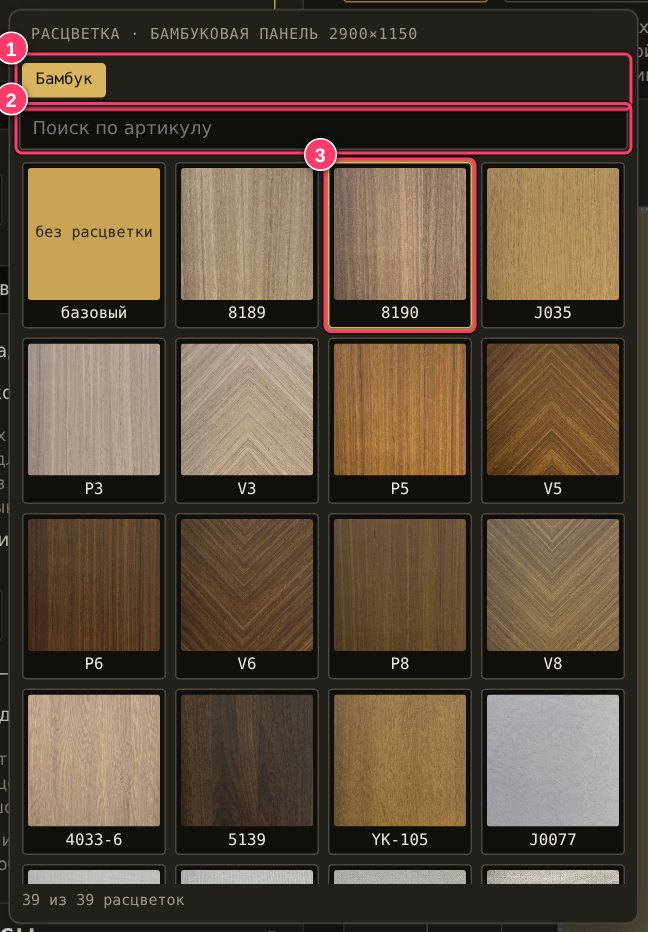
- Вкладки типов — в основном выборе одна вкладка (ваш материал). В окне заполнения проёма и детали — вкладки всех типов.
- Поиск по артикулу — набирайте часть артикула, например «p74».
- Плитка — фото образца и артикул. Выбранная плитка обведена. «Базовый» — материал без конкретной расцветки.
Внизу окна написано, сколько расцветок показано из скольких.
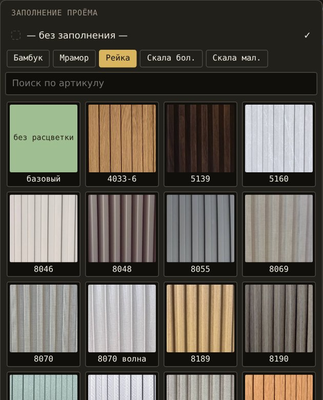
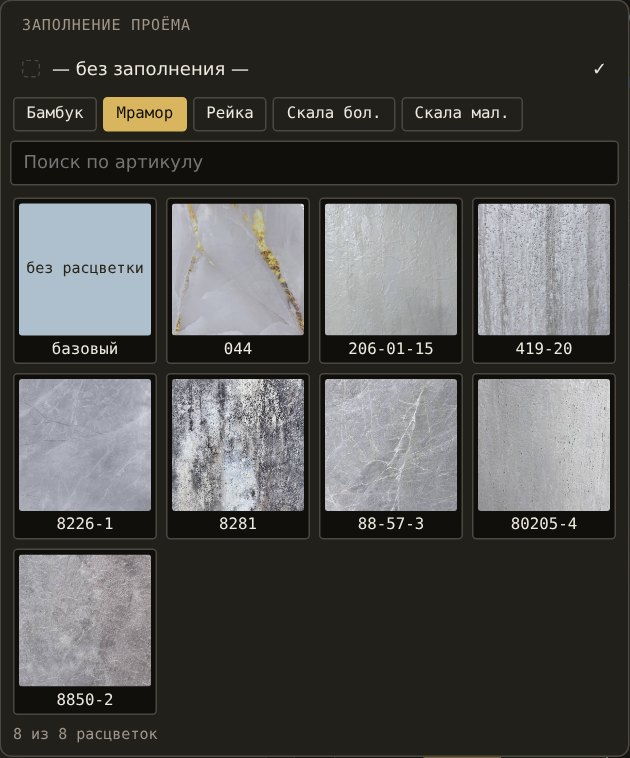
Название выбранной расцветки видно в заголовке схемы, в карте раскроя и в смете. Одна расцветка — одно название-артикул, дублей нет.
Цвет профилей
«Цвет профилей» — один на проект: обычный алюминий (по умолчанию), белый, золото, серебро, чёрный матовый, чёрный глянцевый, розовое золото, шампань. На раскрой, схему и смету он не влияет, а в задании для нейросети жёстко фиксирует цвет профилей и заглушек, чтобы они были нарисованы правильно.
6. Раздел 03 «Проёмы и откосы»
Каждый проём — отдельная карточка. Кнопка + Добавить проём внизу раздела добавляет новую.
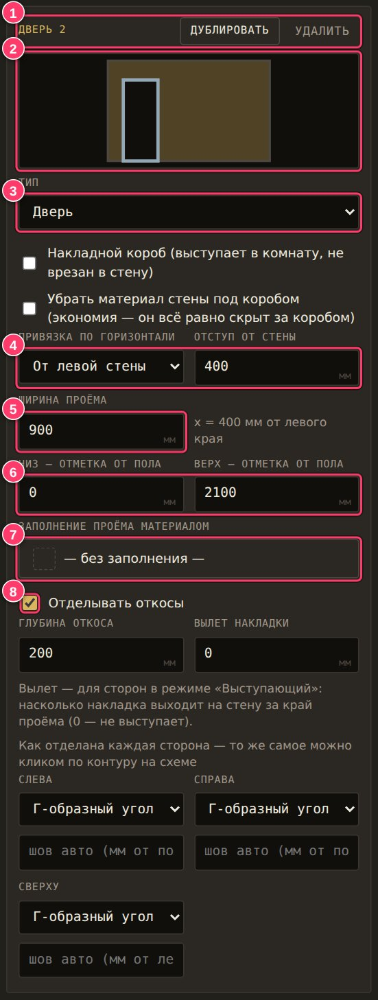
- Заголовок — «Дверь 2». Кнопки справа: дублировать (копия рядом) и удалить.
- Мини-схема — положение проёма на стене. Красная рамка — проём выходит за границы.
- Тип — окно, дверь (низ всегда от пола, снизу нет откоса), ниша / вырез.
- Привязка по горизонтали — «От левой стены», «От правой стены» или «По центру»; рядом — «Отступ от стены».
- Ширина проёма, мм. Рядом подсказка: «x = … мм от левого края».
- Низ / Верх — отметка от пола, мм. Высота проёма вычисляется сама.
- Заполнение проёма материалом — например, мрамор в нише. Выбирается тем же окном с фотографиями. Материал заполнения раскраивается отдельно, и в смету идёт отдельной строкой.
- Отделывать откосы — включает глубину откоса, вылет накладки и способ отделки каждой стороны (ниже).
Дополнительно в карточке есть флажки «Накладной короб» (проём выступает в комнату, а не врезан в стену; нужен для обшивки парящих конструкций) и «Убрать материал стены под коробом».
Как отделаны стороны откоса
Каждая из четырёх сторон (слева, справа, сверху, снизу; у двери — без нижней) настраивается выпадающим списком или кликом по контуру проёма на схеме.
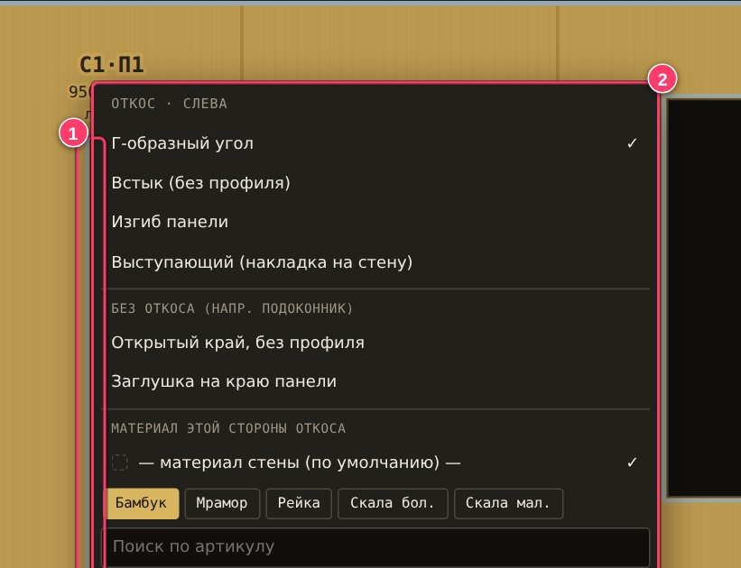
| Режим | Что получается |
|---|---|
| Г-образный угол | отдельная деталь откоса + Г-образный профиль |
| Встык (без профиля) | деталь откоса без профиля |
| Изгиб панели | соседняя панель заворачивается в проём, отдельной детали нет |
| Выступающий | накладка на стену за краем проёма на «вылет» |
| Открытый край | без откоса и профиля (например, подоконник) |
| Заглушка | заглушка на торце панели |
Откосы считаются настоящими деталями и раскладываются в остатки листов. Для режимов с материалом в меню есть пункт «Материал этой стороны откоса». Подсветка LED на откосе рисуется в блоке «LED» (в списке она неактивна и показана только как информация).
7. Работа прямо на схеме
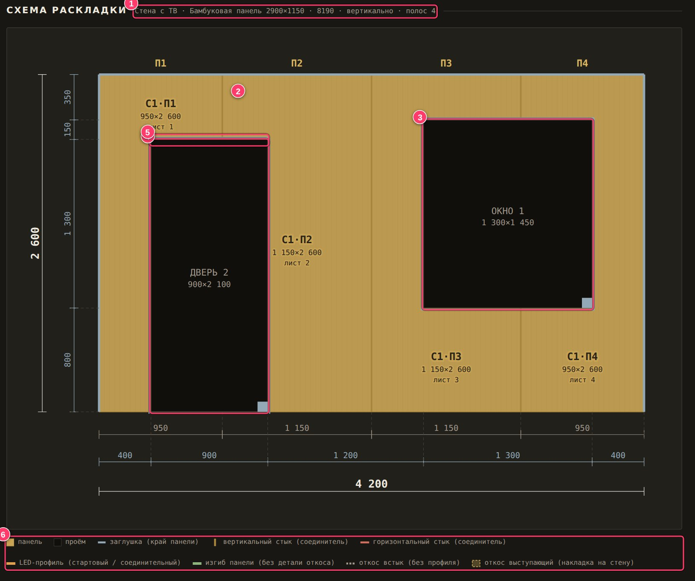
- Заголовок — стена, материал и расцветка, ориентация, количество полос.
- Деталь стены — подписана «С1·П1»: стена 1, полоса 1; ниже — размер и номер листа, из которого она режется.
- Окно — чёрный прямоугольник. Левая верхняя точка — перетаскивание, голубой квадрат в правом нижнем углу — изменение размера.
- Дверь — то же.
- Контур откоса — клик открывает меню отделки стороны.
- Условные обозначения — что означает каждый цвет линии: заглушка, вертикальный и горизонтальный стыки, LED-профиль, изгиб, откос встык, откос выступающий.
Что можно кликать и тянуть
| Действие | Что произойдёт |
|---|---|
| Потянуть проём за тело | перемещение проёма; прилипает к краям полос, краям стены и полу |
| Потянуть за голубой уголок проёма | изменение ширины и высоты |
| Клик по проёму | меню «Заполнение проёма» |
| Клик по линии откоса | меню отделки стороны |
| Клик по вертикальному стыку | меню стыка: соединитель / встык, «Сделать все стыки перемещаемыми», удаление |
| Клик по горизонтальному стыку | то же для горизонтального |
| Потянуть стык | переместить стык (в свободном режиме — любой; обычный стык автоматически включает свободный режим) |
| Клик по краю стены (верх, низ, слева, справа) | «— нет» / «Заглушка» |
| Клик по детали стены | свой материал только для этой детали |
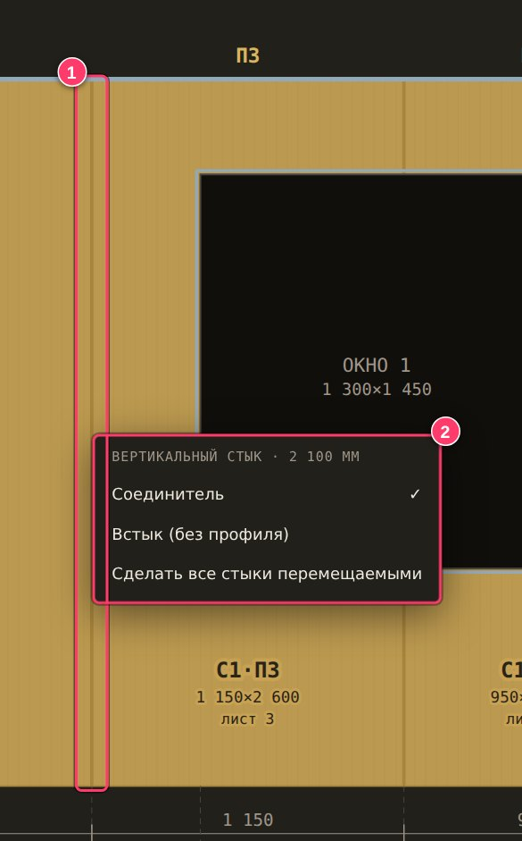
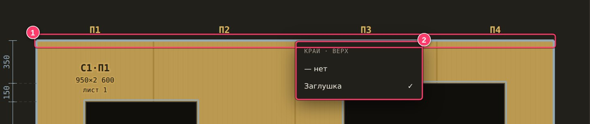
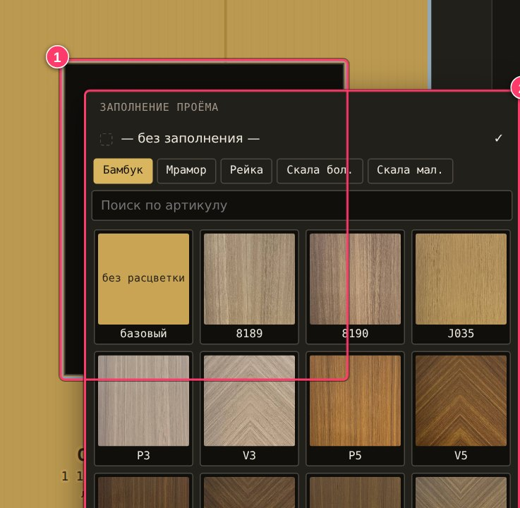
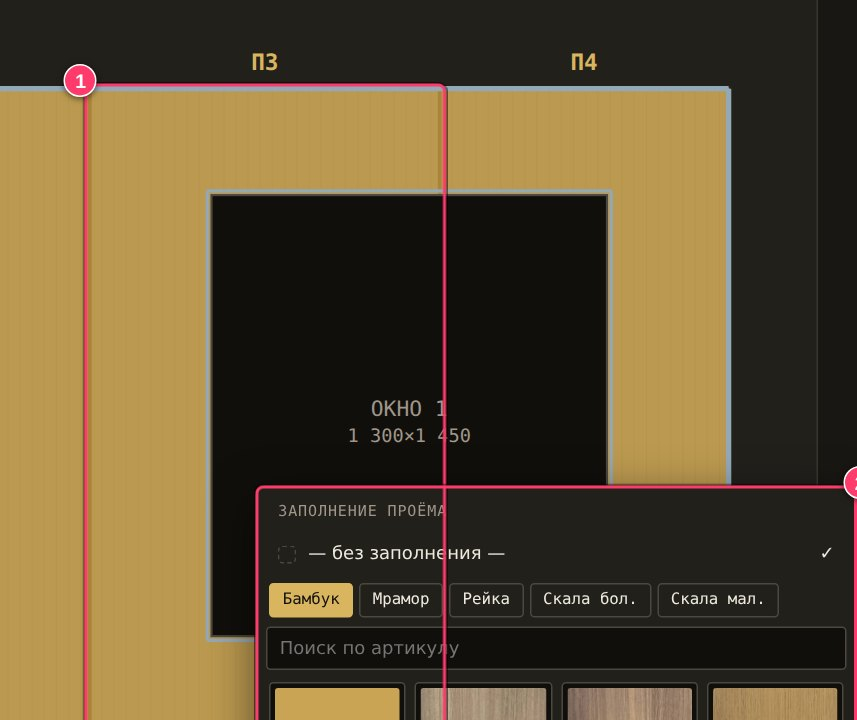
Типы стыков: «Соединитель» — профиль между панелями; «Встык (без профиля)» — панели стыкуются вплотную. LED-профиль на стык ставится только рисованием в блоке «LED» (глава 10).
8. Свободные стыки
По умолчанию стыки жёстко привязаны к раскладке: границы панелей определяются шириной листа, и сдвинуть можно только добавленные вручную. Для нестандартного проекта (узкие полосы, чередование материалов по дизайн-проекту) включается свободная расстановка: каждый стык становится обычным, его можно задать цифрой или перетащить мышью. Включение само по себе раскладку не меняет — естественные стыки просто превращаются в ручные.
Вертикальные стыки
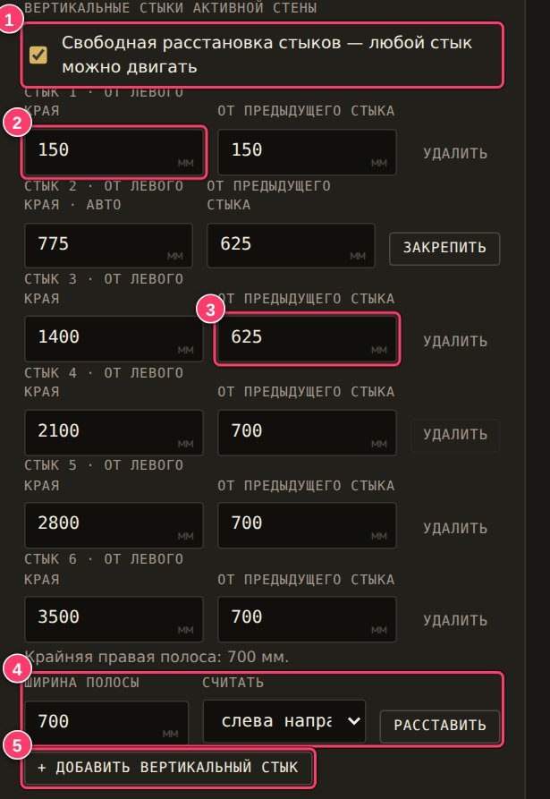
- Галочка «Свободная расстановка стыков» — включает режим для этой стены.
- «От левого края» — расстояние от края стены до стыка. Стык двигается вводом числа.
- «От предыдущего стыка» — расстояние от соседнего стыка слева. Изменение сдвигает только этот стык; значение в первом поле обновится само.
- «Ширина полосы» + «Считать» + «расставить» — заменяет стыки равными полосами: слева направо или справа налево, остаток остаётся с другой стороны.
- «+ добавить вертикальный стык» — новый стык.
Рядом с каждой строкой есть кнопка «удалить»; у стыка, который программа поставила сама (участок шире листа), написано «авто» и есть «закрепить», чтобы сделать его ручным.
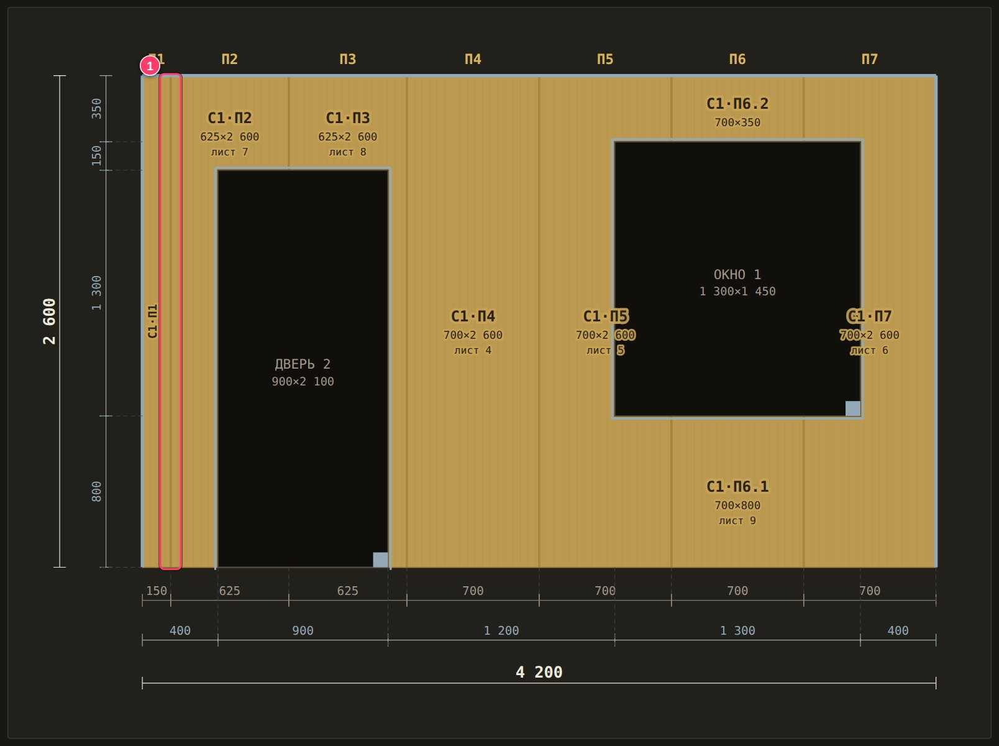
- Перетаскиваемый стык: минимум 50 мм до соседнего.
- Соседний стык — он не двигается, а его расстояние до перетаскиваемого пересчитывается.
Горизонтальные стыки
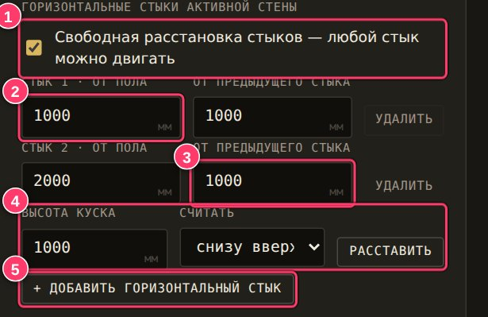
- Свободная расстановка — отключает автоматические стыки (по шагу листа, «кирпичик»).
- «От пола» — отметка стыка. Стык можно также перетащить на схеме.
- «От предыдущего стыка» — расстояние от стыка ниже (первый стык — от пола).
- «Высота куска» + «Считать» + «расставить» — стыки через равную высоту снизу вверх или сверху вниз.
- «+ добавить горизонтальный стык» — новый стык.
При «кирпичной» раскладке стык действует только на чётные или нечётные полосы — в списке под полем стыка написано, на какие именно полосы он действует.
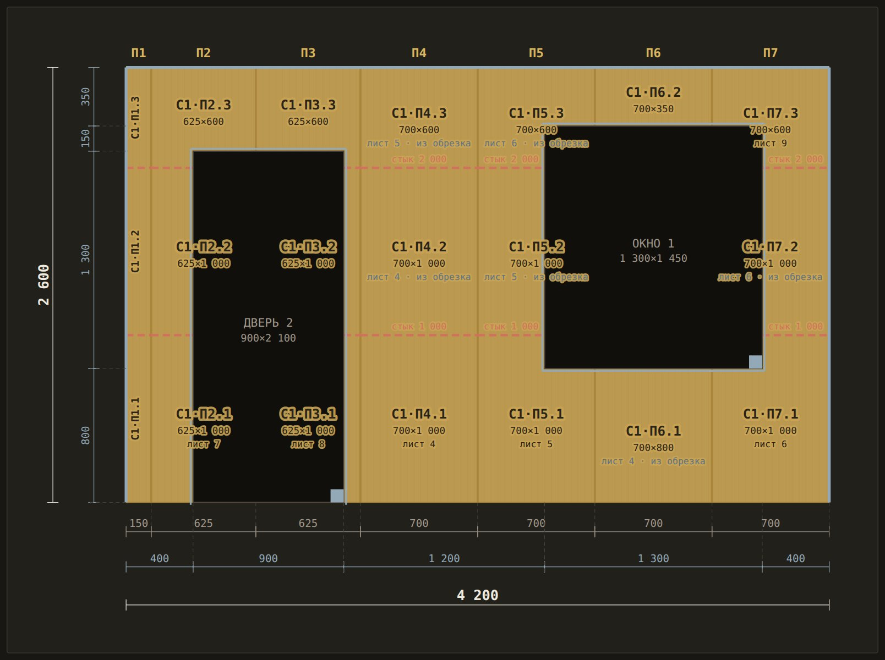
Если вы удалили стыки и кусок получился длиннее листа, он делится сам (строка «авто»). Нажмите «закрепить», если хотите двигать и такой стык.
При горизонтальной раскладке панелей («Ориентация → Горизонтально») поперечные стыки отсчитываются от левого края стены; подпись поля в списке меняется на «от левого края».
Пример: стена с чередующимися полосами по 70 см
- Включите свободный режим01 Объект → вертикальные стыки → галочка «Свободная расстановка стыков».
- РасставьтеШирина полосы = 700, «слева направо» → «расставить». Получатся стыки на 700, 1400, 2100 мм и т. д.
- ПодгонитеЕсли по проекту первая полоса должна быть 150 мм — в первой строке «от левого края» введите 150; остальные можно оставить или поправить цифрой «от предыдущего стыка».
- Назначьте материалыКликайте по деталям на схеме и выбирайте расцветку для каждой полосы (меню «Материал детали»).
9. Профили, клей, цены
Раздел 04 «Профили»
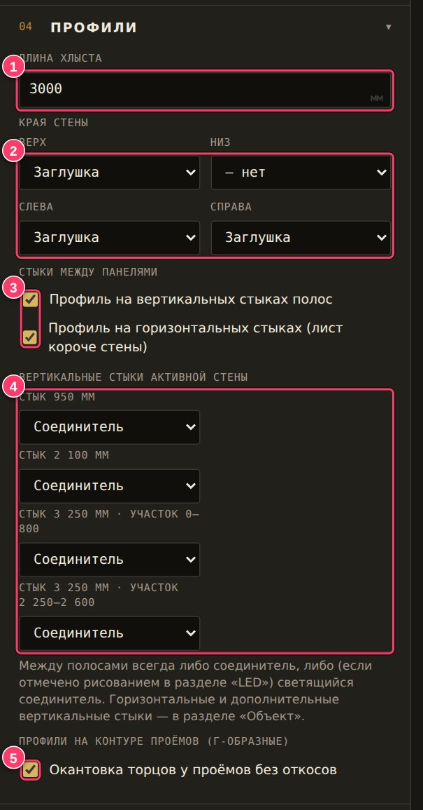
- Длина хлыста — стандартная длина профиля (по умолчанию 3000 мм). Профиль считается хлыстами с учётом остатков.
- Края стены — верх, низ, слева, справа: «— нет» или «Заглушка». LED на край ставится рисованием в блоке «LED».
- Стыки между панелями — включают или отключают профиль на вертикальных и горизонтальных стыках целиком.
- Вертикальные стыки активной стены — выбор типа каждого стыка (соединитель / встык). Горизонтальные и дополнительные — в разделе «Объект» или кликом по схеме.
- Окантовка торцов у проёмов без откосов — Г-образные профили по контуру проёма.
Раздел 05 «Клей»
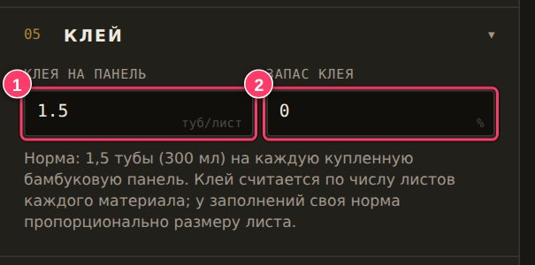
- Клея на панель — туб на лист (по умолчанию 1,5 тубы по 300 мл на каждую купленную бамбуковую панель). Клей считается по числу листов каждого материала.
- Запас клея, % — добавляется сверху.
Раздел 06 «Цены»
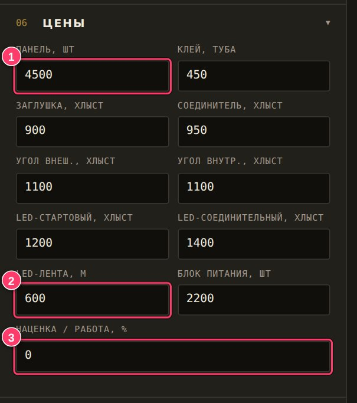
- Цены за единицу: панель, клей, заглушка, соединитель, углы внешний и внутренний, LED-профили (стартовый и соединительный) — за хлыст; лента — за метр; блок питания — за штуку.
- Наценка / работа, % — прибавляется к итогу.
10. Результаты расчёта
Подсказки и карточки
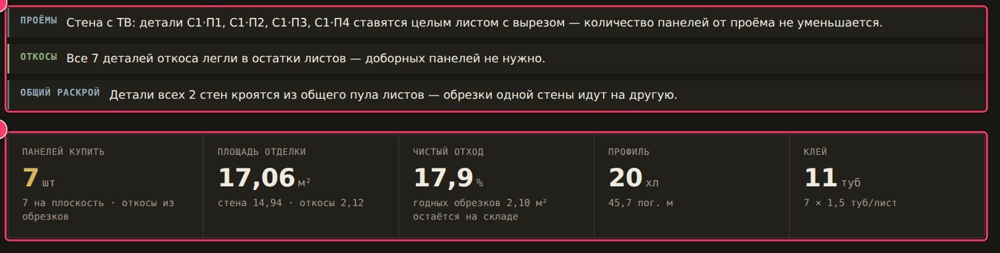
- Подсказки — цветные строки. Красные («ошибка») нужно исправить, жёлтые — проверить, синие — для сведения. Например: «Проём 2 выходит за границы области», «Включите разрешение стыковки откосов — вероятно, добор панели не понадобится».
- Карточки: «Панелей купить» (с разбивкой на плоскость и откосы), «Площадь отделки», «Чистый отход» (цветом предупреждения, если больше 20 %), «Профиль» (хлыстов и погонные метры), «Клей» (туб), а при наличии LED — «LED» (метры ленты, блок питания).
LED — рисование отрезков
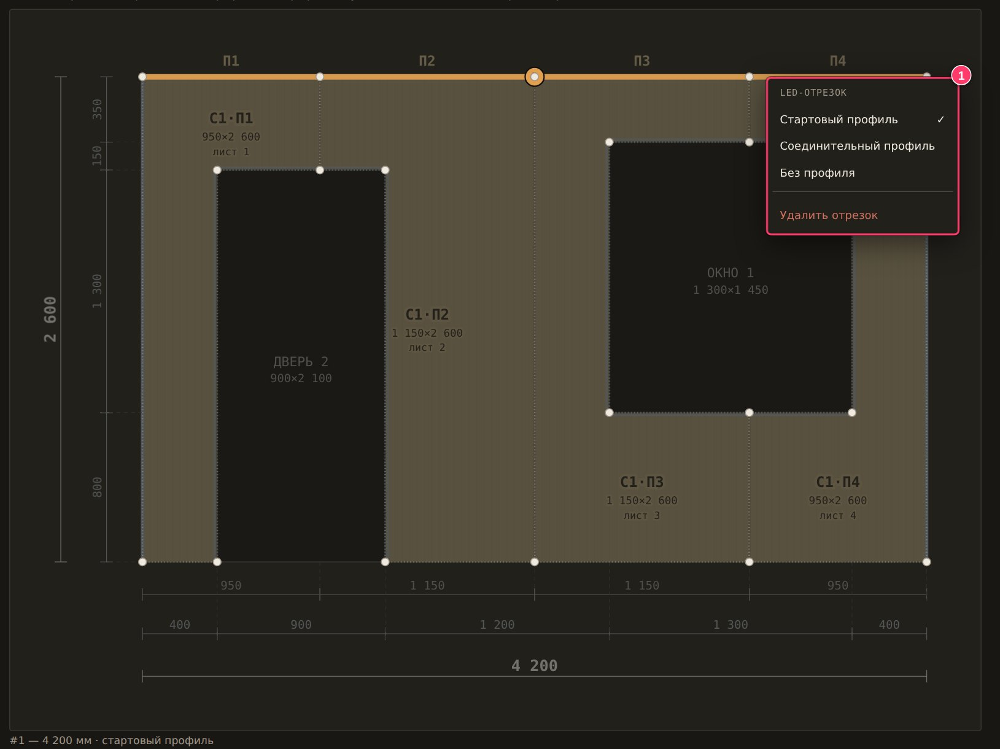
Подсветка рисуется мышью по схеме стены: нажмите на узел (угол, стык, край, угол откоса), ведите к другому узлу и отпустите. Несколько узлов подряд на одной прямой — один непрерывный отрезок. Сразу после протяжки (и потом по клику на готовый отрезок) открывается меню:
- Стартовый профиль — отрезок с начала луча;
- Соединительный профиль — продолжение;
- Без профиля — только лента;
- Удалить отрезок.
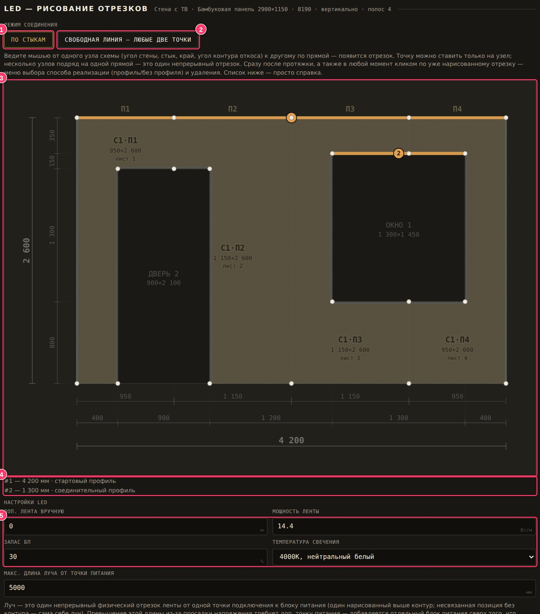
- По стыкам — режим по умолчанию: точки можно ставить только на узлы схемы.
- Свободная линия — любые две точки — линия по прямой под любым углом. Такой отрезок ничего не режет, его длина идёт только в смету.
- Поле рисования — схема стены с узлами (белые точки).
- Список отрезков — номер, длина, способ реализации. Только справка, правка — на схеме.
- Настройки: «Доп. лента вручную», «Мощность ленты» (Вт/м), «Запас БП» (%), «Температура свечения» (2700К…6500К), «Макс. длина луча от точки питания». Превышение этой длины требует дополнительной точки питания и отдельного блока питания.
- Итого по проекту — длина ленты, нагрузка и число блоков питания.
3D — макет комнаты
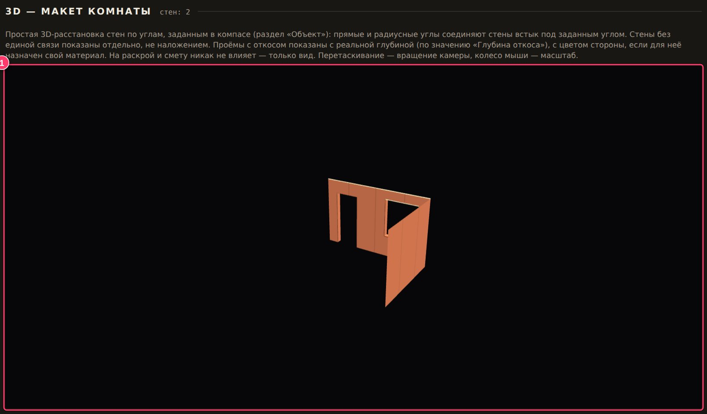
Макет нужен только для наглядности, на раскрой и смету он не влияет. Проёмы с откосами показаны с реальной глубиной. Стены без единой связи показываются отдельно, рядом. Тот же макет (изометрия) попадает на первую страницу печати.
Карта раскроя
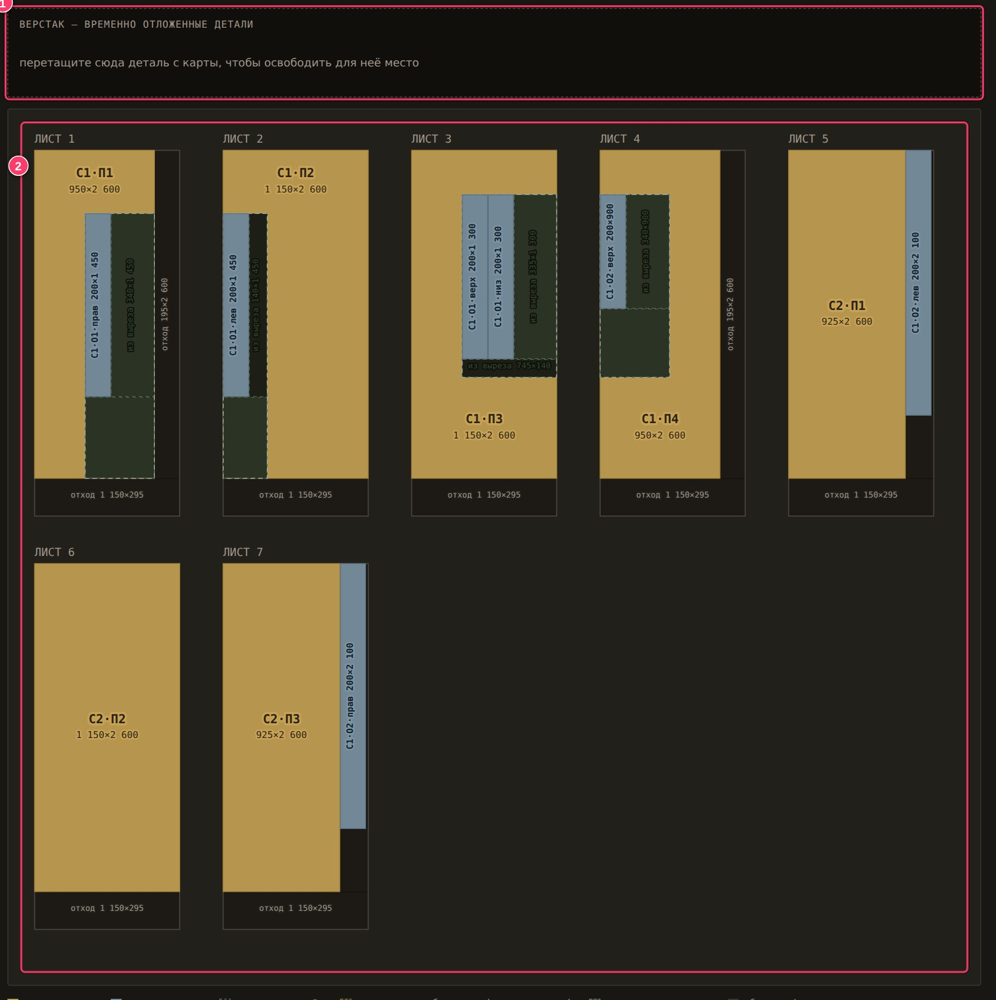
- Верстак — «временно отложенные детали». Перетащите на него деталь, чтобы освободить место на листе.
- Листы — каждый лист показан с деталями стены (жёлтые), деталями откосов, вырезами и обрезками. Цвета объяснены в условных обозначениях под картой.
- Строка итогов — число листов, деталей, откосов и ручных правок. Кнопка сбросить возвращает автоматический раскрой.
Деталь можно перетащить в другое место листа или на другой лист: пунктирный «призрак» зелёный — место подходит, красный — деталь здесь не помещается (при отпускании вернётся на прежнее место). Деталь прилипает к краям листа и соседним деталям с учётом пропила. Значок «↻» в правом верхнем углу детали поворачивает её на 90°, если после поворота она помещается на листе (деталь радиусного угла не поворачивается). Для разных материалов (например, заполнение мрамором) показываются отдельные группы листов.
Вырезы, спецификация, смета
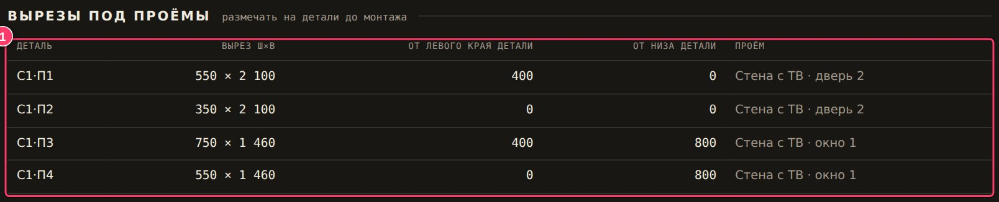
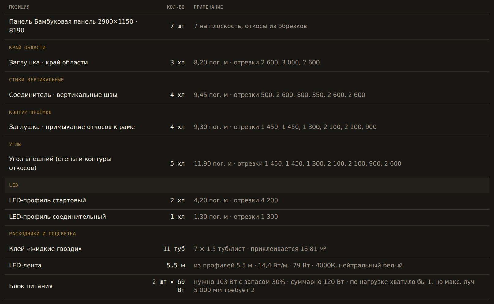
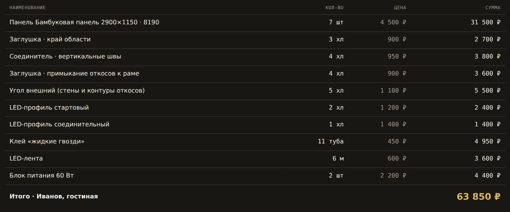
11. Визуализация на фото
Раскладку можно наложить на фотографию комнаты клиента. Делается это двумя способами: показать схему, наложенную на фото (удобно клиенту), и отдать схему плюс описание любой нейросети для генерации картинки — она дорисует реалистичные текстуру, свет и тени, а геометрию (где панель, где стык, где LED) возьмёт со схемы. Фото обрабатывается только в вашем браузере и никуда не отправляется.

- Стена — какую стену проекта накладываем (при нескольких стенах).
- Фото стены/комнаты — загрузка фотографии (JPG, PNG, WebP и др.).
- Фото проекта — список загруженных фото; у каждого своя разметка. Фото узнаётся по имени файла; переименованное сопоставьте кнопкой «Применить».
- Пояснения для нейросети — что важно, но не заложено в проекте: «стены вокруг будут покрашены в белый», «пол — тёмный ламинат». Относится к выбранному фото.
- Что размечаем сейчас — текущая цель: стена; затем откосы (по гранях), «Зоны исключения» (мебель, розетки — туда ничего не ляжет).
- Лупа при разметке — увеличение у курсора.
- Углы за краем фото — если стена не влезла в кадр, ставьте невидимый угол в поле вокруг снимка.
Шаг за шагом
- Загрузите фотоРаздел 07 → «Фото стены/комнаты».
- Отметьте четыре угла стеныКликами на фото, по порядку, в один обход (без перехлёста сторон). Подсказка шага — прямо над фото. Точки можно перетаскивать; лупа помогает поставить их точно в угол.
- Нажмите «Наложить раскладку»Раскладка ляжет на фото с учётом перспективы.
- Отрегулируйте прозрачность схемыПолзунок «Непрозрачность схемы» меняет её сразу.
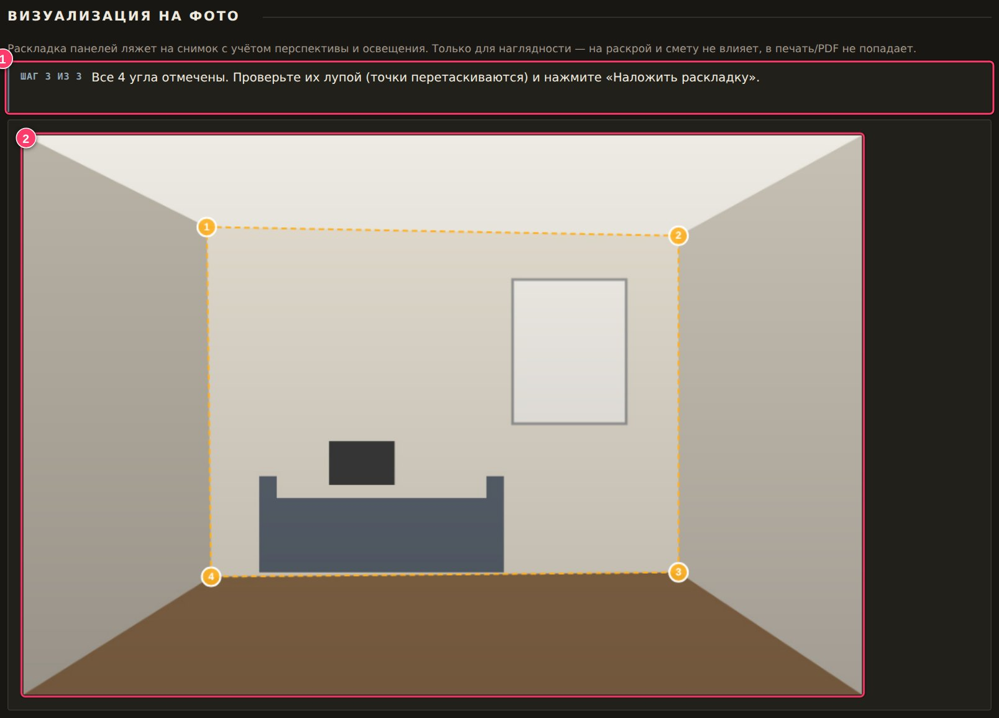

На снимках — условное фото-заглушка вместо реальной комнаты.
Кнопки под фото и для нейросети
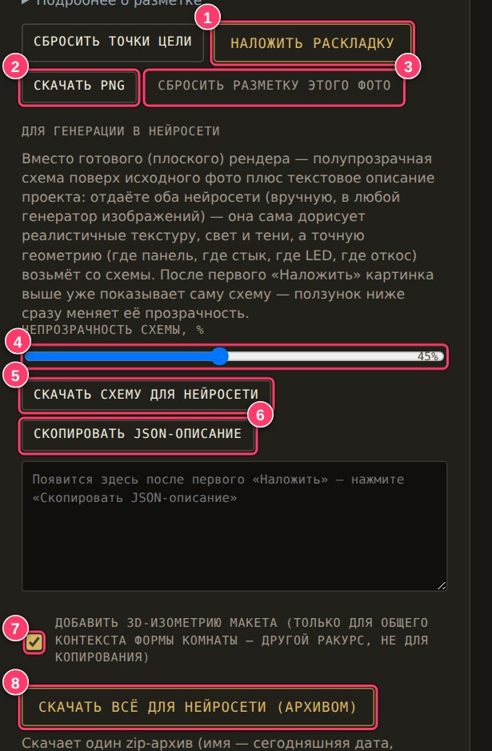
- Наложить раскладку — выполняет наложение (повторное нажатие заменяет прежнее).
- Скачать PNG — готовое плоское изображение с наложенной раскладкой.
- Сбросить разметку этого фото — стирает точки и пояснения этого фото. Кнопка «Сбросить точки цели» стирает только точки текущей цели.
- Непрозрачность схемы, % — прозрачность схемы поверх фото (15–80 %).
- Скачать схему для нейросети — файл «схема-для-нейросети.png» (полупрозрачная схема на фото).
- Скопировать JSON-описание — текстовое описание проекта (материалы, размеры, стыки, LED, откосы) в буфер обмена.
- Добавить 3D-изометрию макета — если отмечено, в архив попадёт общий вид комнаты (только для понимания формы, не для копирования).
- Скачать всё для нейросети (архивом) — один zip-архив с готовым заданием.
Что внутри архива
Имя архива — сегодняшняя дата; повторное скачивание в тот же день браузер назовёт «(2)», «(3)». Внутри — по папке на каждое размеченное фото проекта («1 — …», «2 — …»). Одна папка — один запрос к нейросети:
- исходное фото;
схема-для-нейросети.png— то же фото со схемой: стыки и LED чёткими линиями;описание-проекта.txt— задание: размеры, материалы, стыки, LED, цвет профилей, правила для каждого материала (например, мрамор матовый, рисунок непрерывный; скала — белый гипс с рельефом);материалы.jpg— «доска материалов»: образец каждой расцветки в рамке цвета условной схемы с артикулом в подписи, чтобы нейросеть поняла, какая расцветка на какую деталь ложится;- папка
образцы/— фото образцов в файлах с названием артикула; 3d-изометрия.png— если отмечена;как-отправлять.txt— порядок: что и в какой последовательности перетащить в чат нейросети.
Архив открывается двойным щелчком (в Windows и macOS как обычная папка); файлы одной папки перетаскиваются в чат нейросети. В архив попадают только фото, загруженные на странице в этом сеансе; остальные размеченные фото проекта программа назовёт — загрузите их заново.
12. Файлы, отмена, печать
Сохранение и открытие
Сохранить проект скачивает .json с полным состоянием: все стены, проёмы, стыки и их типы, расцветки, цвет профилей, углы, LED, ручной раскрой, разметку фото. Открыть проект восстанавливает всё. Файлы, сохранённые прежними версиями программы, открываются без изменений. Если расцветка из файла отсутствует в каталоге, программа заменит её базовым типом и предупредит об этом.
Отмена
«↶ Отменить» и Ctrl+Z откатывают до 20 последних шагов: правки полей, проёмы, стыки, LED, углы, разметку фото. Повтора (вернуть отменённое) нет. Внутри текстового поля Ctrl+Z действует как обычная отмена набора.
Печать и PDF
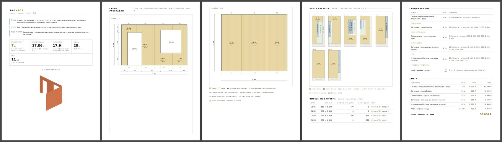
- Страница 1: итоги, подсказки, 3D-изометрия макета.
- Страницы со схемами — по странице на каждую стену, с условными обозначениями.
- Карта раскроя и вырезы под проёмы.
- Спецификация и смета.
Нажмите Печать / PDF и в окне браузера выберите принтер «Сохранить как PDF» (или обычный принтер). Для печати используется светлая тема. Накладка на фото (раздел «Визуализация на фото») в печать не входит.
13. Типовые задачи
Стена с дверью и окном
- Раздел 01: размеры стены.
- Раздел 02: материал, расцветка.
- Раздел 03: «+ Добавить проём» ×2 — дверь (тип «Дверь»), окно; отступы, ширина, отметки.
- Проверьте подсказки над карточками. Если написано «Включите разрешение стыковки откосов», попробуйте включить его в разделе 02.
Подсветка по верху стены
- Откройте блок «LED — рисование отрезков».
- Мышью проведите по верхнему краю — от угла до угла.
- В меню выберите «Стартовый профиль».
- В блоке «Настройки LED» проверьте мощность ленты и температуру свечения. В смете появятся лента, профиль и блок питания.
Угол между двумя стенами
- Раздел 01 → компас: «+ стена» в нужном слоте.
- В клетке между стенами нажмите «+ угол» → прямой угол 90°.
- Для радиусного: клик по «Угол» → «Радиусный угол», задайте радиус.
- Посмотрите 3D-макет.
Узкие полосы и чередование материалов
Глава 8 → «Пример: стена с чередующимися полосами по 70 см».
Показать результат клиенту
- Раздел 07: загрузите фото, отметьте углы, «Наложить раскладку».
- Либо «Скачать всё для нейросети (архивом)» и отдайте папку генератору изображений.
- Для расчёта и документов — «Печать / PDF».
14. Вопросы и ответы
| Вопрос | Ответ |
|---|---|
| Схема показывает не тот цвет, что у панели | Цвета на схеме условные — они нужны, чтобы различать материалы. Настоящий цвет и фактура уходят только в задание для нейросети. |
| Не могу сдвинуть вертикальный стык | Включите галочку «Свободная расстановка стыков» в разделе 01. Либо кликните по стыку на схеме → «Сделать все стыки перемещаемыми». |
| Подсказка «Крайняя полоса всего … мм» | Включите «Симметричная раскладка» или используйте свободную расстановку и задайте стыки вручную. |
| Обрезков не остаётся | Проверьте, что длина листа не равна в точности высоте стены; включите «Использовать обрезки». |
| Откос не помещается в лист | В спецификации появится строка «Откосы не выкроены». Включите «Разрешить стыковку деталей откоса» или уменьшите глубину откоса. |
| Проём выходит за стену | Красная подсказка «Проём N выходит за границы области». Проверьте отступ, ширину и отметки. |
| «Изгиб не применился» | Край проёма не совпал с границей полосы. Вернулся обычный Г-образный угол. Подвиньте проём или стык. |
| Профиль на горизонтальных стыках не считается | Раздел 04 → «Профиль на горизонтальных стыках» выключен (подсказка про это тоже есть). |
| Проект не открывается | Файл повреждён или это не проект раскроя. Программа так и напишет в подсказках. |
| Фото не лезет в кадр целиком | Включите «Углы за краем фото» и поставьте невидимый угол в серое поле. |
| Хочу вернуть автоматический раскрой после ручных правок на карте | В строке итогов над картой нажмите «сбросить». |
| Пропали данные после закрытия вкладки | Автосохранения нет — всегда сохраняйте проект в файл. |
15. Где что находится
| Функция | Место |
|---|---|
| Название клиента | 01 Объект → «Клиент / объект» |
| Добавить стену, угол | 01 Объект → компас → «+ стена», «+ угол» |
| Переключить стену | 01 Объект → компас → кнопка с названием |
| Радиус угла | компас → клик по «Угол» → «Радиусный угол» |
| Размеры стены | 01 Объект → «Ширина / высота области», «Высота потолка» |
| Свободные вертикальные стыки | 01 Объект → «Вертикальные стыки активной стены» |
| Свободные горизонтальные стыки | 01 Объект → «Горизонтальные стыки активной стены» |
| Удалить стену | 01 Объект → внизу «Удалить эту стену» |
| Тип панели и размеры листа | 02 Панель → «Материал», «Длина / ширина листа» |
| Расцветка (артикул) | 02 Панель → «Расцветка (артикул)» |
| Цвет профилей | 02 Панель → «Цвет профилей» |
| Ориентация, симметрия, «кирпичик» | 02 Панель → «Ориентация», флажки |
| Обрезки, пропил | 02 Панель → «Использовать обрезки», «Мин. полезный обрезок», «Пропил» |
| Добавить проём | 03 Проёмы и откосы → «+ Добавить проём» |
| Заполнение проёма материалом | карточка проёма → «Заполнение проёма материалом» или клик по проёму на схеме |
| Откосы | карточка проёма → «Отделывать откосы» или клик по контуру проёма на схеме |
| Материал отдельной детали | клик по детали на схеме |
| Длина хлыста профиля | 04 Профили → «Длина хлыста» |
| Заглушки на краях | 04 Профили → «Края стены» или клик по краю на схеме |
| Тип стыка (соединитель / встык) | клик по стыку на схеме или 04 Профили → «Вертикальные стыки активной стены» |
| Норма клея | 05 Клей |
| Цены, наценка | 06 Цены |
| LED: рисование, мощность, блок питания | правая часть → «LED — рисование отрезков» |
| 3D-макет | правая часть → «3D — макет комнаты» |
| Фото, наложение, архив для нейросети | раздел 07 + правая часть «Визуализация на фото» |
| Карта раскроя, верстак | правая часть → «Карта раскроя» |
| Вырезы под проёмы | правая часть → «Вырезы под проёмы» |
| Спецификация, смета | правая часть → «Спецификация», «Смета» |
| Сохранить / открыть проект, печать, отмена | шапка окна |
Горячие клавиши и жесты
| Действие | Как |
|---|---|
| Отменить | Ctrl+Z (вне текстового поля) или «↶ Отменить» |
| Подтвердить число в списке стыков | Enter |
| Развернуть / свернуть раздел | клик по заголовку раздела |
| Вращение 3D-макета | перетаскивание мышью |
| Масштаб 3D-макета | колесо мыши |
| Меню на схеме | клик (без перетаскивания) по линии или детали |
| Закрыть меню | клик в пустое место |